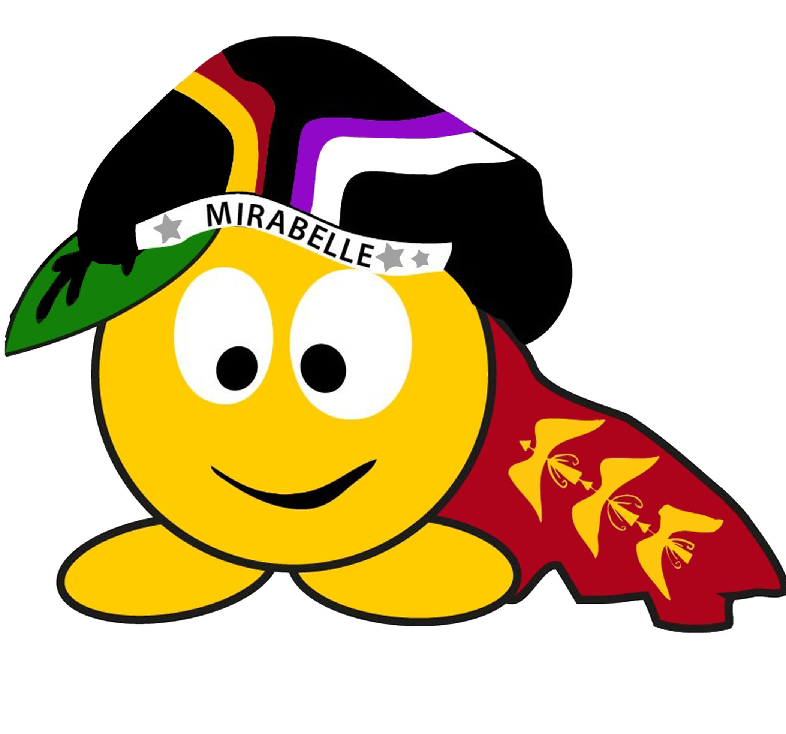

Il s’agit du Groupement Nancéien Associatif Résolument Faluchard et il a pour but de rassembler tous les faluchards nancéiens.
Son objet est de promouvoir l’esprit de la tradition falucharde à Nancy ; rassembler tous les faluchards nancéiens afin d’organiser ou de participer à des congrès, rassemblements ou tout autre évènement faluchard en France et dans les autres pays.
Le GNARF propose aux faluchards divers évènements :
- des apérals à thème (chaque bureau choisit quelles évènements à mettre en lumière).
- des concours en tout genres afin de faire vivre l'association lors des périodes creuses de la vie étudiante.
- des repas faluchard afin de présenter le folklore que l'association représente.
- Un week-end qui se tient au début du printemps spécialement dédié aux impétrants de la faluche nancéienne.
- Un congrès qui se situe à Chambrey fin Aout. Les faluchards sont invités par la ville de Chambrey pour
se réunir et fêter leur années étudiantes.
Le GNARF se charge également d’accueillir les faluchards d’autres villes soit ponctuellement
soit lors de gros week-end.
L'adhésion est 5 euros.
Nous vendons les pin's au prix de 2 euros l'unité.